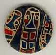

Metallic Work
Pete did a series of works with many different materials, but all having one thing
in common, creatures drawn in metallic ink. Pete will never make anything like this
again in his life, because after he finished this series he became very ill. His
illness was due to the toxins in the metallic ink that had gotten in his system after
hours of being exposed to it.
 |
"Lizards"
paper, ink |
As in his portrait work, the lizards have many of the same line
qualities. However, the lizards and bugs take on a more two dimensional quality with
very intricate designs on the inside.
 |
 |
"Bug Buttons"
buttons, paint, ink |
These are only two buttons out of countless buttons that Pete has done. The buttons
are on a very interesting journey so to speak. Most of them were given away to a couple
of children. These children have them hanging on a flag in their house, and whenever any
of their friends come over, they offer one of the buttons to them. The buttons travel
around being given and shared from one person to another. Other people who have a few
of them have done the same.
 GO TO PETE'S HOMEPAGE
GO TO PETE'S HOMEPAGE